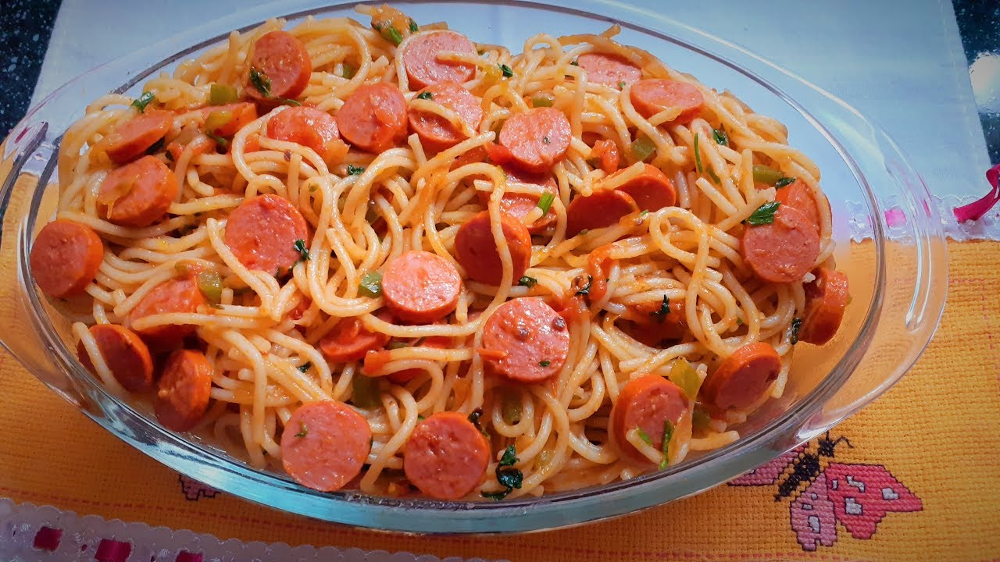

Macarrão com salsicha 🍝

Descrição
Esse macarrão rápido com salsicha vai ser o queridinho da sua casa. Prepare hoje mesmo!
Ingredientes
- 1/2 cebola pequena
- sazón de massas
- molho de tomate
- 5 salsichas
- 1 colher de óleo
- 1 tomate
- 100ml de água
- 300g de macarrão
Etapas
- Após cozinhar o macarrão com água e sal escorra, lave e reserve.
- Na panela adicione, cebola picada, o óleo, e o sazón de massas, deixe dourar.
- Em seguida coloque o tomate picado, o molho de tomate, mexa um pouco e depois acrescente a salsicha.
- Depois que tiver fervendo, retire um pouco do caldo e reserve num copo.
- Adicione o macarrão na panela, mexa, acrescentando aos poucos o caldo, até ficar suculento!